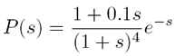
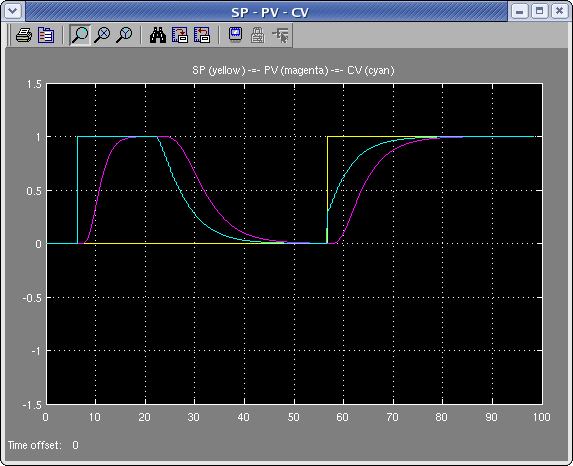
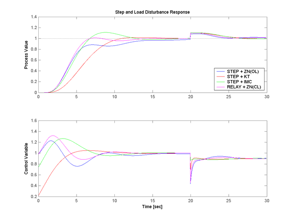
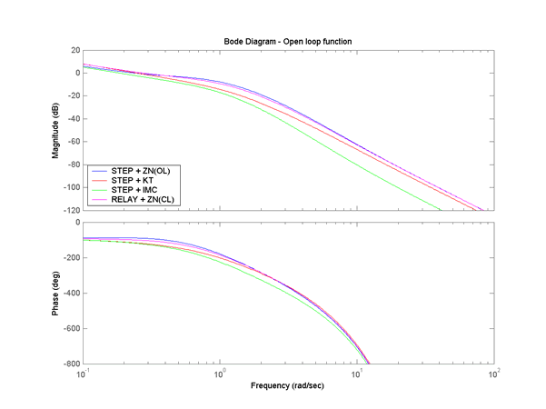
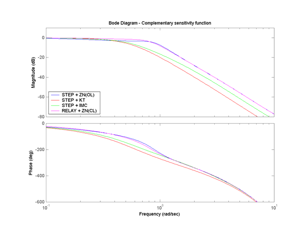
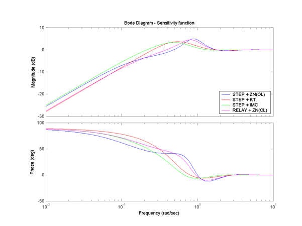

| AutotunerPID Toolkit | |
Examples
The autotuner application can be used in at least two ways. The first option is to simply familiarize with an autotuning PID controller, conducting a whole tuning session and observing its phases. The second option is to compare different autotuning methods with the "comparative analysis" to understand which one is best suited for each type of control problem.
In the following sample outputs of the autotuner application will be given with respect to the following plant
Sample output during normal operations
Sample output of the Comparative Analysis
Sample output during normal operations
During normal operations the user can interact with the control system using the PID control panel and/or the environment panel. The functioning of the control system is mainly inspect through a Simulink scope block.
|  |
The comparative analysis displays the value of the PID parameters obtained with the different tuning methods and the simulated results both in time and in frequency domain.
| K | Ti | Td | N | b | |
|---|---|---|---|---|---|
| ZN (OL) | 0.99 | 5.10 | 1.27 | 5 | 1 |
| KT (Ms=2) | 0.68 | 2.71 | 0.68 | 5 | 0.32 |
| IMC (lambda=1) | 0.85 | 3.01 | 0.53 | 1.47 | 1.02 |
| ZN (CL) | 0.75 | 4.06 | 1.01 | 5 | 1 |
|  |
|  |
|  |
|  |
Notice that in this case, where the process has a high-order rational dynamics, and thus a significant mismatch with respect to a first-order model, the performance of methods based on that structure (the IMC and the KT) is not as good as that of relay-based methods. Of course this is just one case, but comparisons like this are greatly beneficial to really master the autotuning theory and use.
| | Environment Control | Function Reference | |